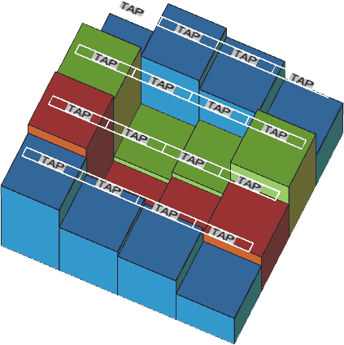

Figure A: A 3-dimensional musical water-fence
heights of the blocks are
If Farmer John turns on a tap some water will be poured onto the block under that tap due to the gravity. As soon as the water crashes onto the block a dulcet sound will be made. And the tune of the sound is determined by the height of the block that makes the sound. Farmer John dislikes the same tune made by two different blocks. So no blocks has the same height. For simplicity we assume that the height of each block is between 1 and n × m.
We define pour(i,j,k) as the operation pouring k units of water onto the block bij. It is apparent that after pouring water onto 3dmwf probably some water will remain in concave holes.
When we pour(i,j,k) one and only one of the following two cases occurs:
(1) There is no water on the bij and there is some neighboring block whose horizontal line is lower than the bij.
Let Sum be the number of those neighboring blocks. Then pour(i,j,k) is equivalent to pour(i',j',k⁄Sum) where bi'j' is one of those neighboring blocks. That means the water will flow to all the lower neighboring blocks equally.
For example, in the previous figure,
pour(4,1,27)<=>
pour(4,0,9), pour(5,1,9), pour(4,2,9) <=>
waste 18 units of water, pour(5,2,3) , pour(4,3,3), pour(3,2,3) <=>
waste 21 units of water, pour(5,3,1), pour(4,4,1), pour(3,3,1), pour(3,2,3) <=>
waste 22 units of water, pour(5,4,0.5), pour(4,5,0.5), pour(3,3,1), pour(3,2,3) <=>
waste 23 units of water, pour(3,3,1), pour(3,2,3).
Obviously the water of pour(3,3,1) and pour(3,2,3) will be trapped in the concave hole formed by b
22,b
23,b
32 and b
33. So finally the volume of the waste water is 23 units.
(2) There is some water on the bij or there is no neighboring block whose horizontal line is lower than bij.
The k units of water will be mixed together with the water already on the bij. Then the horizontal line of those mixed the water will rise up until impossible because there is an exit that makes the water out of the concave hole.
For example, in the previous figure, continuing analyzing the last example,
(A)pour(3,2,3). After pouring 1 unit of water the horizontal lines of all blocks will become
And then after pouring 2 units of water the chart above will be become
(B)pour(3,3,1). After pouring 1 unit of water the chart above will become
| 5 | 12 | 11 | 8 |
| 15 | 31⁄3 | 4 | 14 |
| 16 | 31⁄3 | 31⁄3 | 7 |
| 13 | 10 | 9 | 6 |
(C)If we go on pouring a lot of water onto the concave hole, the chart above will become
The redundant water will flow away through the b34.
On a sunny day, after farming on his vast farm, Farmer John was exhausted. He wanted to listen to some dulcet music. So he composed a long music score for the 3dmwf. The music score is a list of pour(i,j,k) arranged in specific order. And now he invited his friends, Wang Dong, Guo Huayang, Chen Danqi, He Yijun to help him operate 3dmwf.
You know, Farmer John is an abstemious farmer. He doesn't want to waste too much water for playing music on 3dmwf. Could you tell him the volume of the total waste water?
The input begins with two numbers, n and m, indicating the length of the row and the column respectively.
The next n lines each contain m integers indicating the height of wood blocks.
The next line contains a single integer, t, the size of the music score.
The next t lines each contain three integers, i,j, and k, indicating pour(i,j,k). The order of pour(i,j,k) in the input is the same as that in the music score.
Print the volume of total waste water with 2 digits after the decimal point.